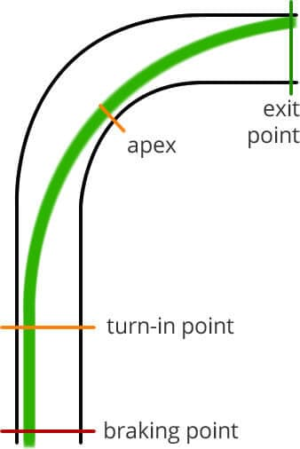

Racing Line
WHAT IS THE RACING LINE?
The racing line is the fastest line or arc through a corner on a race circuit. The trajectory of the racing line depends on the severity of the corner, how long the following straight is and what kind of car is being driven. The goal is to always carry as much speed in the braking zone, through the corner and onto the next straight. There are a few terms you’ll hear drivers talk about when describing a racing line. It’s straightforward, but it’s important that you know the key terms. The four main sections of a racing line are the braking point, turn-in point, apex or clipping point and the exit point. Here’s a summary of how to take the racing line: Brake to maximum capacity at your braking point Move your vision to the apex point Turn-in your car at the turn-in point Make the apex of the ideal racing line Begin to introduce the accelerator Open up steering to the corner’s exit point
BRAKING POINT
The braking point is the position at which you begin to get on the brakes before a corner. Understanding the term is simple, however, picking the latest braking point possible and continuing to decelerate at 100% of the grip available is less so – we’ll cover braking in detail in a later tutorial. For the moment, know that the majority of your braking should be in a straight line, with the final release of the brake pressure requiring super smoothness.
TURN-IN POINT
Next up in our racing line process is the turn-in point – the point at which you turn into the corner. What’s important here is that you’re already looking towards the apex, so you know when and how hard to turn into the corner – again, we’ll cover this is more detail in a later tutorial. Miss the perfect turn-in point and your lap time will suffer. Turn in too late and you won’t be able to carry as much speed through the corner, turn in too early, and you’ll cripple your exit speed.
APEX OF A CORNER
You’ll hear drivers talking about hitting the perfect apex, or about when they just missed it. The apex is the point at which you’re at the inside of the corner – it can also be referred to as the clipping point. Most circuits will have a curb at the apex to stop greedy drivers (most of us) from running onto and over the grass. The curb is usually an excellent visual cue of where the apex is when you’re turning the car into the corner. Once you’ve made it to the apex (if your racing line is correct) it will be time to begin getting back on the throttle. We’ll go into this in more detail later, but faster corners tend to have early apexes, and slow corners and hairpins will generally have late apexes.
EXIT POINT
The exit point is the point at which your car once again reaches the outside of the track. Once you’ve passed the apex, you should begin to increase throttle position and open up your steering angle accordingly – do this correctly and you’ll end up at the optimum exit point. Now that we’ve got the main terms under our belt, let’s take a look at the theoretical best racing line, known as the geometric line.
Pit Stop
In modern F1 racing, pit stops are a critical part of any race strategy. Some key points to consider include: Pit stops allow teams to change tires and refuel the car, ensuring that it can perform at its best throughout the race. Pit stops can be used strategically to gain an advantage over competitors. For example, a well-timed pit stop can allow a driver to make up time or take the lead.
Pit stops also pose a risk, with mistakes potentially costing a driver valuable time or even resulting in a disqualification.
Key Challenges of F1 Pit Stops
F1 pit stops are not without their challenges, and several factors can impact the outcome of a pit stop. Let’s take a look at some of the key challenges involved in F1 pit stops:
Timing
Timing is crucial in F1 pit stops, and even the slightest delay can be costly. The pit crew must work together seamlessly to ensure that the car is serviced as quickly and efficiently as possible. Any delay, even by a fraction of a second, can cost a team valuable time and potentially the race.
Safety
F1 pit stops are inherently dangerous, and the safety of the pit crew and driver is of paramount importance. The pit crew must wear specialized safety equipment, including fireproof overalls and helmets, to protect them from potential accidents.
Weather
Weather conditions can have a significant impact on F1 pit stops. Rain, for example, can make the track slippery and increase the likelihood of accidents during a pit stop. Teams must be prepared to adapt their pit stop strategy to suit the prevailing weather conditions.